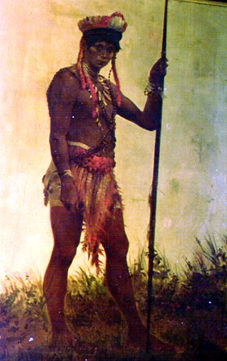

|
|  |
| Aurélio
de Figueiredo e Mello, Portrait of
Walpes Indian |
Where photography was deployed in order to forge a supposedly
unmediated image of "true otherness" -a literal trace of the real-, the
visual arts and literature contributed to the conventionalization and
iconization of such images. Not necessarily these iconographies had
exclusively negative connotations. In fact, in Chile as well as in
Brazil (whilst only to a much lesser extent in Argentina), romantic
Indianism often pictured native Americans as virtuous, noble savages
whose heroic resistance against the European colonizers (as in the case
of the legendary Mapuche warrior Lautaro in Chile) or highlighted their
generous, self-sacrificing collaboration with (or even love for) their
Portuguese counterparts (as in the indianist novels of José de
Alencar and other Brazilian writers). In fact, due to the status and
function of both kinds of visual representation in fin-de-siècle society, it
is probably safe to claim that idealizing representations such as the
above portrait (commissioned for the 1882 Brazilian Anthropological
Exhibition) prevailed in the domain of painting, whereas those more
geared towards scientific racialism dominated photographic
representations of ethnic (and class or gendered) otherness, often
underpinned by contemporary concerns about miscigenation and genetic
inheritance.

|